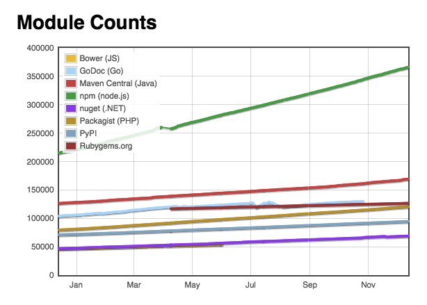

package.jsonPackage manager creado para Node.js (y Front End).
Registro Open Source con mas cantidad de librerias.
Command Line Interface
--version ➡️ Obtener versionhelp ➡️ Buscar ayuda sobre otros comandosinit ➡️ Iniciar nuevo proyectooutdated ➡️ Chequear dependencias desactualizadasi o install ➡️ Instalar dependenciasuninstall ➡️ Desintalar dependenciasnpm inpm i [module]npm i -S [module]npm i -D [module]
npm uninstall -S [module]
npm i -g [module]
Pueden ser accedidos por linea de comandos
package.jsonMetadata + Ambiente Reproducible
Empezar en version 1.0.0
* ➡️ ultima version
~ ➡️ ultima minor version
^ ➡️ ultima major version
npm initindex.jsnpm loginnpm publish
Podemos usar el archivo .npmignore para omitir contenido
Para subir una actualizacion del modulo, debemos cambiar la version.
starttest[name]
npm run [name]